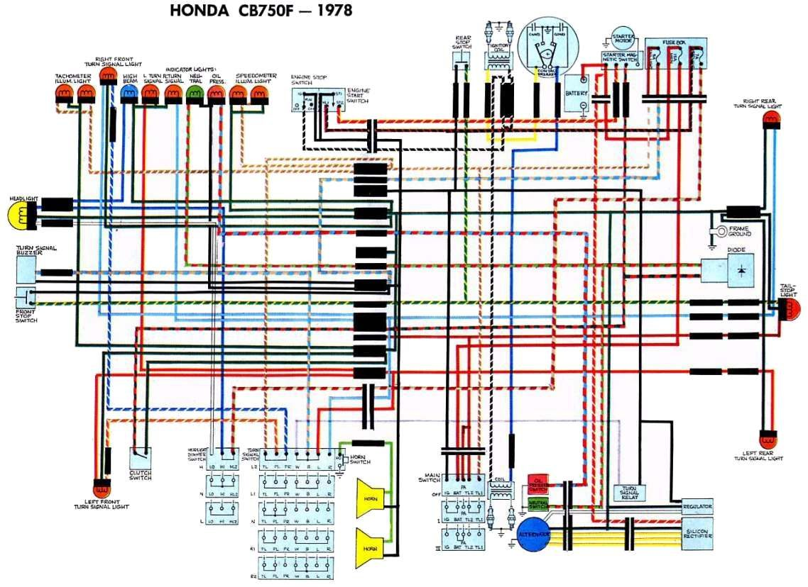
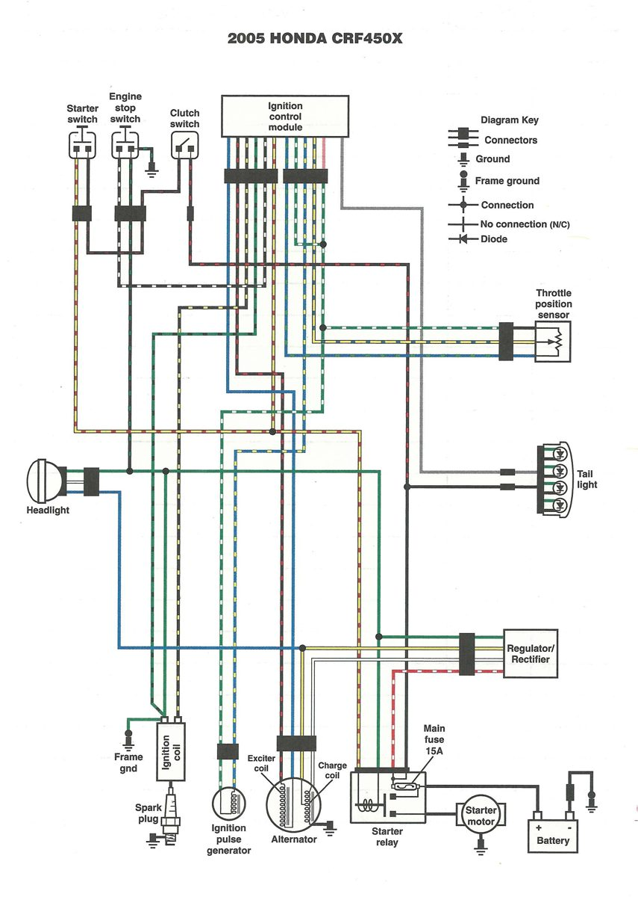

Every circuit on a bike has the same four parts: a power source, a feed wire, a load (bulb, coil, unit, switch) and a return to earth. A bike is many of these circuits put together. A wiring diagram shows each one, so you can test only the wires that matter.
Safety
- Do not cut into wires to test them. Probe at connectors.
- Use the diagram for your exact model and year. Colours change between models.
- Disconnect the battery negative (-) before unplugging units.
You need
- The diagram from your bike's manual.
- A multimeter or a test lamp.
Steps
- Pick the circuit that fails. If the indicators fail but the lights work, ignore the lights.
- Find the failing part on the diagram, such as the indicator switch or the horn.
- Note the wire colours going to it. Many diagrams use letters for colours. Check the colour key on the page. If it says "colour and tracer", the first colour is the main one and the second is the stripe.
- Follow the feed wire back towards the battery. Mark every fuse, switch, relay and connector on the way.
- Look at each marked point by eye. Look for broken, melted or green wires and loose plugs.
- Switch on the circuit. At the battery, confirm you have full voltage first.
- Test for voltage at the first connector after the fuse. Voltage present: move to the next connector. No voltage: the fault is between the last good point and this one.
- Keep moving along the wire until voltage disappears. The fault is in that section.
- At the load, check the earth wire. An earth wire with a bad connection to the frame looks like a dead part.
- Voltage and earth both good at the part, but it does not work: the part has failed. Replace it.
- Bikes with no battery (small magneto bikes): the coils make the power only while the engine turns. Use a continuity test with the engine off. Unplug the coil first, so the test does not read through it.
- Wire colours differ by maker. Do not rely on a colour list from another bike.
Check your work
- You can name the section where the fault was and what you did.
- Every plug you opened is clean, fully pushed in and dry.
- The circuit works under a wiggle test of the harness.
If it did not fix the problem
- Voltage lost along a wire: Do a voltage drop test.
- The fault comes and goes: Find a wiring fault.
- Fuse blows: Find a short circuit.